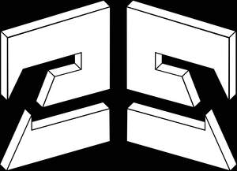

Trade Mark Journal No.2025/036 5 September 2025
UK00004246762 8 August 2025 (25,35)

- Class 25
- Clothing; hooded sweatshirts; tracksuits; casualwear; outerwear; hoodies; sweatshirts; T-shirts; shirts; long-sleeved shirts; short-sleeved shirts; trousers; jeans; cargo pants; cargo shorts; shorts; windbreaker; joggers; jackets; coats; gilets; fleeces; footwear; trainers; boots; shoes; sandals; headwear; caps; beanies; hats; socks; underwear; bucket hats; compression shirts; compression leggings; long-sleeve undershirts.
- Class 35
- Advertising; marketing; digital marketing; social media marketing services; influencer marketing; online advertising on a computer network; search engine optimisation for sales promotion; pay‑per‑click advertising; public relations; publicity; writing of publicity texts; preparation and updating of advertising material; dissemination of advertising matter; distribution of samples; rental of advertising space; rental of advertising time; layout services for advertising purposes; shop window dressing; merchandising services; sales promotion for others; sponsorship search; organisation of exhibitions, trade fairs and fashion shows for commercial or advertising purposes; presentation of goods on communication media, for retail purposes; commercial intermediation services; business management; business administration; office functions; secretarial services; invoicing; bookkeeping; payroll preparation; accountancy; business auditing; tax preparation; business consultancy; business management assistance; business project management; business strategy and advisory services relating to e‑commerce; procurement services for others; purchasing goods and services for other businesses; import‑export agency services; outsourcing services; personnel recruitment; employment agency services; human resources consultancy; business management of artists, models and influencers for advertising or commercial purposes; market studies; market research; opinion polling; compilation of statistics; business data analysis; data processing services; database management; compilation of information into computer databases; customer relationship management; consumer profiling for marketing purposes; commercial information and advice for consumers; price comparison services; price quotation services; organization, operation and supervision of loyalty programmes and incentive schemes; administration of consumer loyalty programs; arranging subscriptions to goods and services for others; subscription‑based order fulfilment services for others; online ordering services; provision of an online marketplace for buyers and sellers of goods and services; auctioneering services; compilation of business directories; business networking services; retail, wholesale services and online retail services in relation to the sale of clothing, footwear, headwear, bags, wallets, purses, luggage, jewellery, watches, eyewear, sunglasses, cosmetics, skincare, fragrances, personal care preparations, printed matter, books, magazines, posters, art prints, stationery, homeware, furniture, lighting, textiles, linens, cushions, tableware, kitchenware, candles, household containers, electronics, mobile devices, accessories for mobile devices, computer peripherals, downloadable digital media and digital files, pre‑recorded media, downloadable image files, downloadable multimedia files, sporting goods, gym equipment, toys, games, novelty items, gifts, keyrings and badges.
Subversive Structure Limited